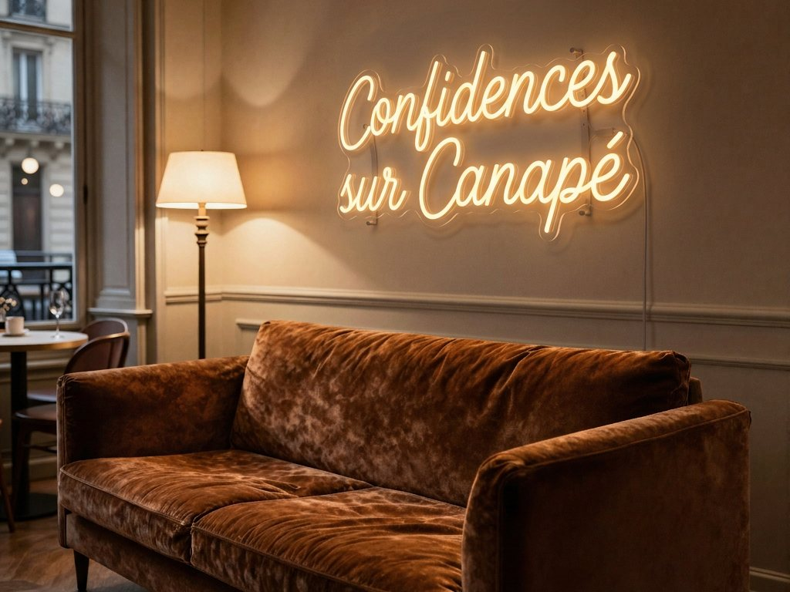
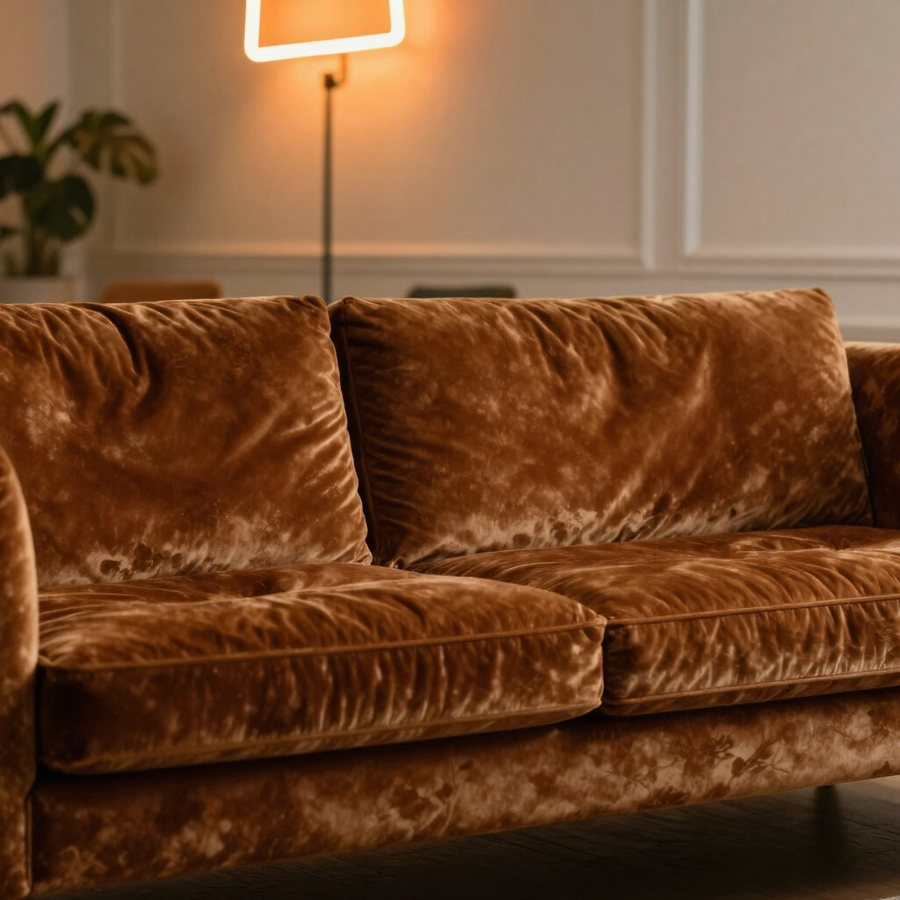

Dernier épisode
Épisode 1 : Les premières confidences
Le premier épisode du podcast Confidences sur Canapé, avec Ludovic Franceschet, est disponible en vidéo sur YouTube et en audio sur Spotify.
Confidences sur Canapé, le podcast filmé où un invité, connu ou inconnu, se raconte sans filtre sur un canapé, dans un salon chaleureux à Paris. Créé et animé par Matheo Beslot.

Dernier épisode
Le premier épisode du podcast Confidences sur Canapé, avec Ludovic Franceschet, est disponible en vidéo sur YouTube et en audio sur Spotify.

Tu as une histoire à raconter ? Propose ta venue dans le podcast.
Le podcast filmé où des invités se racontent sans filtre dans un salon chaleureux à Paris. Pour imaginer une collaboration, contactez-nous via le formulaire.
Confidences sur Canapé est né d'une envie simple : retrouver l'authenticité des échanges vrais. Installés confortablement dans un salon parisien, nous invitons des personnes, connues ou inconnues, à se raconter sans filtre. Notre mission est d'offrir une bulle d'intimité où la parole se libère, pour inspirer des récits sincères et sans filtre.
Plongez dans l'intimité de Confidences sur Canapé. Un décor chaleureux, une lumière ambrée et une ambiance feutrée où chaque récit prend vie, entre Paris et vous.
Confidences sur Canapé se regarde sur YouTube, s'écoute sur Spotify et se suit au quotidien sur Instagram. Pour soutenir le podcast, rendez-vous sur Patreon.
Une question, un mot doux ou une envie de collaborer ? Écrivez-nous, on vous lit avec attention.